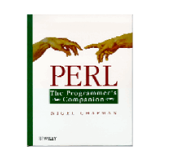

By Nigel Chapman, John Wiley & Sons. First edition 1997. ISBN: 0-471-97563-X. 280 pages. $27.50.
I wish Perl: The Programmer's Companion had been around when I learned Perl. Chapman assumes that you are already a programmer, and he presents Perl as a language that helps you, the programmer, get things done. (The title confused me for months, because I thought it referred to the book, not the language.) The language is presented one feature at a time, but after reading five pages, one doesn't say "Now I know about hashes," but rather "Now I know how to solve more real-world problems."
The order of presentation is interesting: for example, we're thirty pages into the book (during which time we've already seen some useful programs) before we're introduced to variables. But he's found an effective linear path through the maze of Perl; you don't get the feeling, as with some books, that you'll have to read a hundred more pages before you can actually do anything. Every chapter contains numerous useful well-commented programs that show how Perl is actually used to solve small but potentially annoying problems.
The exposition is exceptionally clear. Chapman knows his audience, and writes directly for it. One problem that I have with O'Reilly's Programming Perl is that the authors often don't seem to be sure whether they are writing for novices or experts (the glossary is the worst offender in this regard). This book doesn't suffer from that problem at all. It is an introduction to the language, not a reference, so everyone who reads it will probably want to pick up Programming Perl eventually -- although this book and the Perl documentation will make a fine combination.
I do have two quibbles, one minor and major. The minor one is that the use English statements everywhere are laudable, but have the drawback that readers may be confused by seeing $_ everywhere in other people's code when they're used to $ARG in the book. More importantly, the discussion on references does not live up to the standards of clarity of the rest of the book; the author gets bogged down right at the start in details such as the way symbol tables work and the difference between lvalues and rvalues. The clear one-sentence explanation (you can use a reference wherever you'd normally use a name) is relegated to a footnote eleven pages into the chapter. Please, everyone, make the first couple of thousand words you read about references be the perlreftut documentation.
Overall, though, this is the best introduction to Perl for programmers that I've seen. When someone at my workplace asks about Perl, this is the book I give them. I can't think of a higher recommendation than that. Rating: 5 out of 5.
If you know (or are!) an experienced programmer seeking to learn Perl, you may want to skip the other introductory books on the market and start with Perl: The Programmer's Companion. Nigel Chapman makes several assumptions about his audience, not the least of which is that the reader is already an experienced programmer, quite possibly in several other languages.
Where other books assume a passing familiarity with C, this one goes farther, comparing Perl's language elements variously to C, C++, FORTRAN, Algol68, Pascal, Awk, and Snobol. Mr. Chapman does not spend much time explaining concepts. If you don't already know about variables, data types, arrays, exception handling, and other programming basics, this is not the book for you.
Unlike many books on Perl, however, this one does not assume familiarity with Unix. In fact, the book was written on a Macintosh using OzTex (a Mac port of LaTeX) and the examples were tested with MacPerl. Perl elements and philosophies inherited from Unix are called out and explained, often with a wry comment or two.
Aside from the obvious assumptions about audience, this is still an introductory book on Perl. It advances from background through variables, flow of control, lists and hashes, ultimately covering references, objects, modules, and Perl's use with the Web, but never going into deep detail on any one subject. This book won't tell you everything, but it will give you a solid grounding in Perl.
The book makes good use of examples, as well as syntax diagrams, to avoid the need for extraneous explanation. Again, if you don't have some previous programming experience, or you aren't good at making deductions from examples, you may find this confusing. I found it refreshing.
One final assumption Mr. Chapman makes is that his audience is composed of native English speakers, with a high level of literacy. The sentences are complex; the vocabulary is not always for the timid. I enjoyed this immensely but some readers may find it difficult going, especially in the more verbose sections.
Tom Christiansen, in his Camel Critiques, awarded this book 5 camels (one of few books so honored). This is not surprising, as Tom has a keen eye for craftsmanship. Jon Orwant hasn't told me what units I'm working with -- camels or jelly beans -- but I give this book 5 of them.
Utility: High (for the right audience) Value: Excellent.
For Perlers who bristle at the all too frequent comment "Perl? CGI? Same thing," Nigel Chapman's Perl: The Programmer's Companion will be an absolute delight. Aimed not at the seemingly bottomless pit of "Idiot to Internet in 7 days" consumers, PPC instead appeals to the latent computer science major in all of us -- at times a bit too much. After reading O'Reilly's Learning Perl, Programming Perl, and Perl Cookbook, this book thoughtfully and playfully spotlights Perl's fundamentals in a fresh way, explaining concepts like regular expressions, built-in datatypes, and references more clearly for novices and journeymen alike. This book a must for everyone who uses Perl as a one-job tool and is ready to take their skills to the next level.
Where a more traditional book might begin by listing Perl's supported data types, PPC opens with a simple introduction to regular expressions that eases the uninitiated programmer into the strange world of Perl syntax. Although certainly not as extensive as O'Reilly's Mastering Regular Expressions, Chapman introduces enough regex vocabulary so that the reader can tackle the perlre documentation more effectively.
Chapman moves on to outline scalars and common operators. Ever wonder how Perl ended up with magic variables like $^W or $^I where most of the other bedweomered scalars are one character? See page 33. (Here's a hint: think control characters.)
Before discussing hashes or subroutine argument passing, Chapman highlights his discussion of flow control mechanisms with a small "single pass recursive descent compiler," which suggests the potency of this language. It also demonstrates that his intended audience is expected to have danced with these problems before. This is just a warmup exercise to the topological sort outlined in the chapter on hashes. Later on, Chapman defines lvalues and rvalues, which help you understand references, and ultimately objects, better. If you have deep regrets about sleeping through your data structures and algorithms classes, Chapman serves up a penance that should clear your conscience (I still grin mischievously knowing that Perl gives me a dictionary type for free).
As great, useful, and important as this book is, it is not faultless. Although chock-full of diagrams, not all of them make sense at first. Even when you fully grok them, you may not find that you spent your time wisely. One diagram that tweaks me is on page 150 (Figure 7.5), which describes an array reference. Although there is nothing semantically wrong with this graphic, it bothers me that it shows a $ coming before a @ in an effort to show a reference to an array. It bothers me that a Perl neophyte might mistake the diagram for legal syntax. Chapman also favors the use English module names for special variables. While Perl virgins won't be fazed by this, more experienced hackers might find code like open OUT, "Results" or die "couldn't open Results file ($OS_ERROR) (Page 118) distracting. Chapman's book ends with a fictional cafe dialog in which three programmers mix it up about Perl. Frankly, I think this scene was stolen from the IRC #perl channel.
This is one Perl book that I go back to repeatedly. I have based Perl lectures on it and keep it at work for easy access. This book will put you on the road to Perl mastery. Rating: 4 out of 5. Utility: While it is no Perl Cookbook or Effective Perl Programming, PPC will solidify your comprehension of Perl fundamentals. Value: Absolutely worth the cover price for people who learned their Perl "on the street."
The book is a slim volume whose modest cover suggests that it's not just another book on Perl. I enjoyed reading the book because it didn't preach. It presented one person's thoughts on how Perl idioms and features can help a programmer use the language effectively. It is not a comprehensive guide to Perl, but contains enough pointers to let a reader find one. If you read the introduction in a bookstore and like it, buy the book -- it delivers on its promises.
Nigel Chapman writes lucidly and gives the reader a clear idea of his intentions early in the book. He introduces the views of Perl as either a souped up Unix scripting language or a "real" programming language, and he chooses to treat is as the latter. This, along with the author's stated assumption that the reader already knows how to program, allows the book to illuminate Perl's features with non-trivial examples. I find these more convincing than lots of tiny code snippets.
I was refreshed to find a book that contrasted Perl with other languages to show Perl's strengths and weaknesses. The ordering of the subjects is a natural way to introduce Perl to a programmer. I particularly liked Nigel Chapman's use of wry humor. Examples of both good and bad code, and "bad" code where Perl didn't behave as Chapman might have expected are illuminating. I find this much more edifying than good examples by themselves.
The basics of Perl and a little history are covered quickly and accurately, without reproducing material from other tutorials or reference material. The main meat of the next chunk of the book covers data structures, object-oriented programming, and modules. Here, some of the idioms seem a little stilted, but the treatment has enough detail, illustrations, and comparisons for sufficient understanding.
The examples include extending a distributed module and then using that extended module in a practical way. To me, that's worth much more than a dry exposition on how I ought to do it.
There is a chapter on web programming that spends as much time putting programs in context as with examples. The final chapter wraps things up by giving the reader pointers to other information about Perl, and yet more context by mentioning its influences.